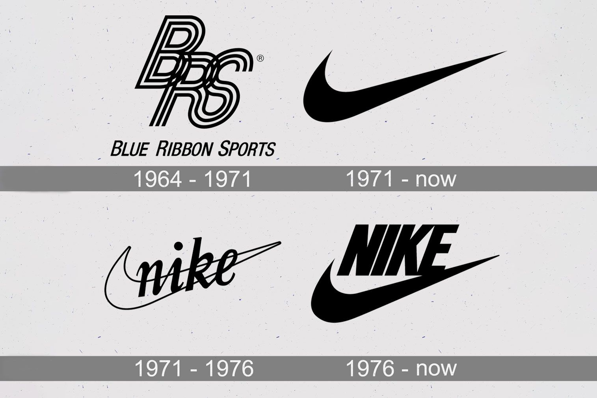
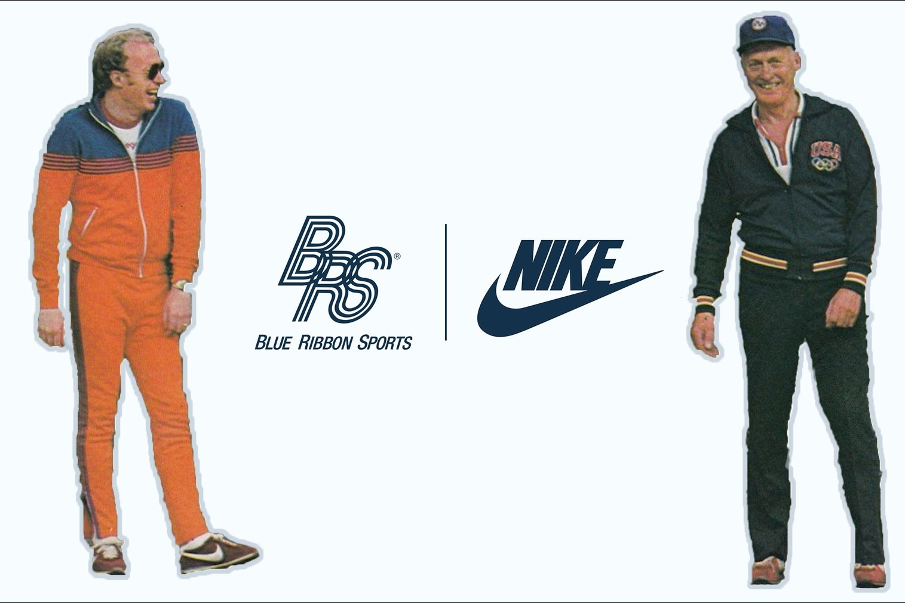

Le Swoosh symbolise avant tout le mouvement, la vitesse et l’élan. Bien qu’il évoque l’aile de la déesse grecque Niké, sa créatrice, Carolyn Davidson, a expliqué que cette ressemblance était fortuite. Sa forme rappelle aussi une coche (« checkmark »), associée à la réussite, à la performance et à la victoire.